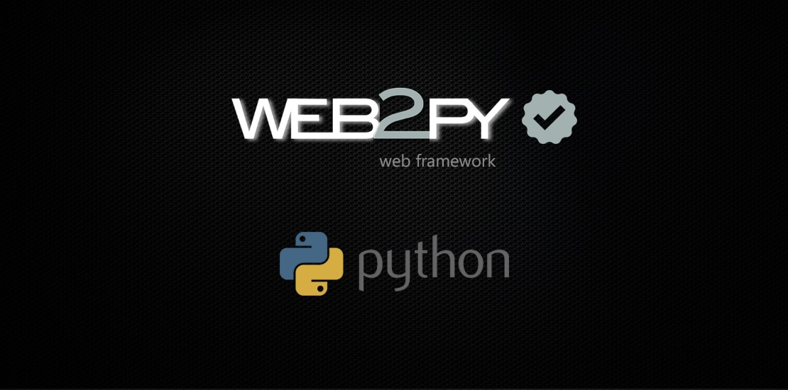
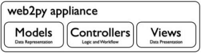

Web2py это
Web2py определяется как бесплатная веб-инфраструктура с открытым исходным кодом для гибкой разработки, которая включает веб-приложения на основе баз данных; он написан на Python и программируется на Python. Это фреймворк с полным стеком; он состоит из всех необходимых компонентов, разработчик должен создать полнофункциональное веб-приложение. Фреймворк web2py следует шаблону Model-View-Controller запуска веб-приложений в отличие от традиционных шаблонов.

Model-View-Controller
- Модель является частью приложения, которая включает логику для данных. Объекты в модели используются для извлечения и хранения данных из базы данных
- Представление является частью приложения, которое помогает отображать данные для конечных пользователей. Отображение данных выбирается из модели
- Контроллер является частью приложения, которое обрабатывает взаимодействие с пользователем. Контроллеры могут считывать данные из представления, управлять пользовательским вводом и отправлять входные данные в конкретную модель

У web2py есть встроенная функция для управления файлами cookie и сессиями. После совершения транзакции (в терминах SQL) сеанс также сохраняется одновременно.
Также web2py способен запускать задачи в запланированные интервалы после выполнения определенных действий. Это может быть достигнуто с CRON .
Цели Web2py
Web2py пытается снизить барьер вхождения в веб-разработку, сосредоточив внимание на трех основных целях:
- Простота использования - это означает сокращение времени обучения и развертывания, а также сокращение затрат на разработку и обслуживание. Вот почему web2py является полнофункциональным фреймворком без зависимостей. Он не требует установки и не имеет конфигурационных файлов. Все работает прямо из коробки, включая веб-сервер, базу данных и веб-среду IDE, которые дают доступ ко всем основным функциям. API включает в себя только 12 объектов ядра, с которыми легко работать и запомнить. Он может взаимодействовать с большинством веб-серверов, баз данных и всеми библиотеками Python.
- Быстрая разработка. Каждая функция web2py имеет поведение по умолчанию (которое может быть отменено). Например, как только вы определили свои модели данных, вы будете иметь доступ к веб-панели администрирования баз данных. Также, web2py автоматически генерируются формы для ваших данных, и это позволяет легко выставить данные в HTML, XML, JSON, RSS, и т.д. web2py предоставляет некоторые высокоуровневые виджеты, такие как вики и сетки для быстрого построения сложных приложений.
- Безопасность. Абстрактный Уровень Базы Данных (DAL) web2py устраняет SQL Иньекции. Язык шаблонов предотвращает Межсайтовые Скриптинговые уязвимости(Cross Site Scripting vulnerabilities). Формы, генерируемые web2py, обеспечивают проверку полей и блокируют Межсайтовые Подделки запросов(Cross Site Request Forgeries). Пароли всегда хранятся хешированными. Сессии хранятся на стороне сервера по умолчанию, чтобы предотвратить вмешательство в Куки (Cookie Tampering). Куки сессии подписываются универсальным уникальным идентификатором UUID для предотвращения увода сессии(Session Hijacking).
|